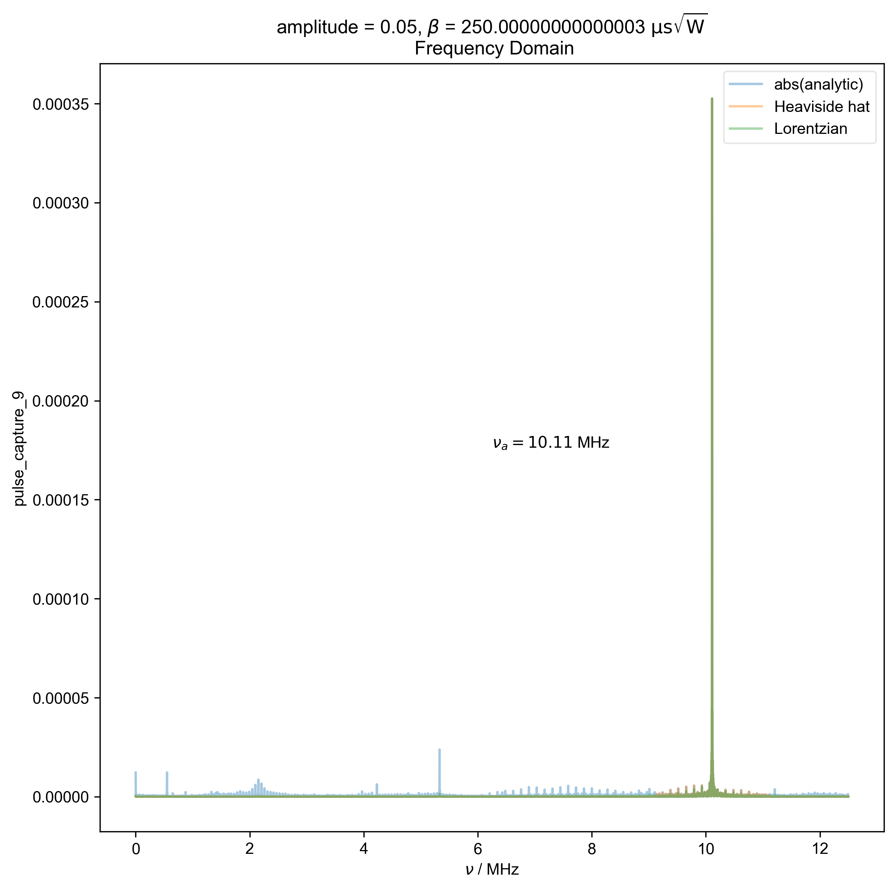
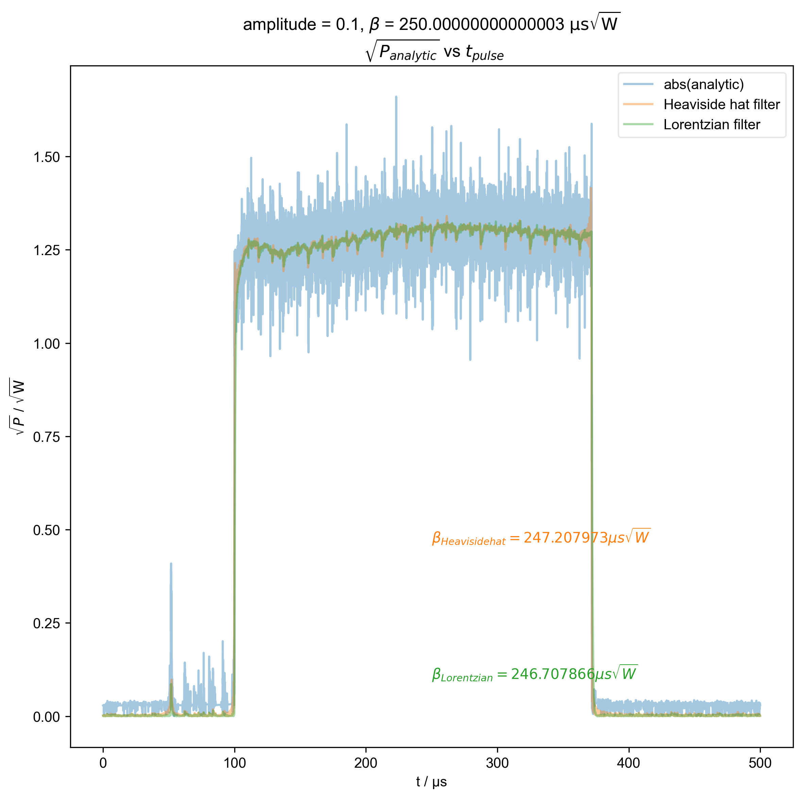
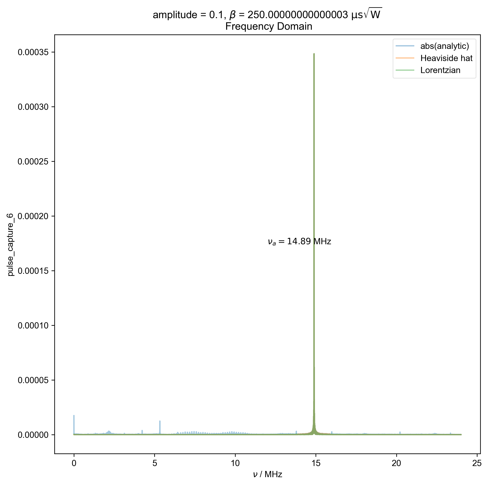
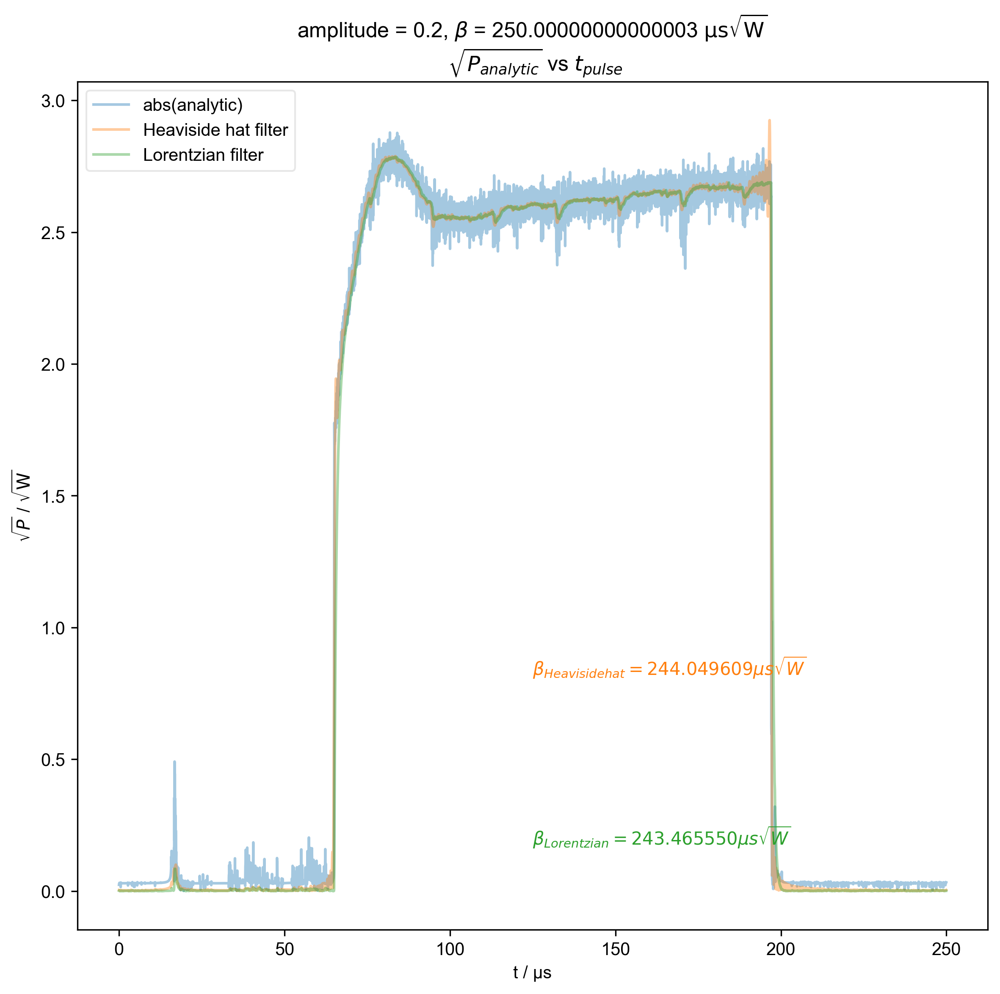

Note
Go to the end to download the full example code
Calculating β from individual pulse capture¶
Assuming a single pulse was acquired via simple_onepulse_capture.py in the FLInst repo using the GDS oscilloscope, this script plots the absolute analytic along with the frequency filtered absolute of the analytic before integrating to calculate :math:`beta = frac{1}{sqrt{2}}int{V(t)dt}’.

- 
- 
- 
- 
1: amplitude = 0.05, ${\beta}$ = 250.00000000000003 ${\mathrm{\mu s \sqrt{W}}}$
$\sqrt{P_{analytic}}$ vs $t_{pulse}$ |||μs
2: amplitude = 0.05, ${\beta}$ = 250.00000000000003 ${\mathrm{\mu s \sqrt{W}}}$
Frequency Domain |||MHz
3: amplitude = 0.1, ${\beta}$ = 250.00000000000003 ${\mathrm{\mu s \sqrt{W}}}$
$\sqrt{P_{analytic}}$ vs $t_{pulse}$ |||μs
4: amplitude = 0.1, ${\beta}$ = 250.00000000000003 ${\mathrm{\mu s \sqrt{W}}}$
Frequency Domain |||MHz
5: amplitude = 0.2, ${\beta}$ = 250.00000000000003 ${\mathrm{\mu s \sqrt{W}}}$
$\sqrt{P_{analytic}}$ vs $t_{pulse}$ |||μs
6: amplitude = 0.2, ${\beta}$ = 250.00000000000003 ${\mathrm{\mu s \sqrt{W}}}$
Frequency Domain |||MHz
import pyspecdata as psd
import matplotlib.pyplot as plt
import numpy as np
from itertools import cycle
from pyspecProcScripts import find_apparent_anal_freq
colorcyc_list = plt.rcParams["axes.prop_cycle"].by_key()["color"][:3]
color_cycle = cycle(colorcyc_list)
V_atten_ratio = 102.2 # attenutation ratio
HH_width = 2e6
Delta_nu = (
15.19e6 - 14.61e6
) # width of reflection at -3dB - specific to large probe
with psd.figlist_var() as fl:
for filename, nodename in [
(
"240819_amp0p05_beta_max_pulse_capture.h5",
"pulse_capture_9",
),
(
"240819_amp0p1_beta_max_pulse_capture.h5",
"pulse_capture_6",
),
(
"240819_amp0p2_beta_max_pulse_capture.h5",
"pulse_capture_2",
),
]:
s = psd.find_file(
filename, expno=nodename, exp_type="ODNP_NMR_comp/test_equipment"
)
# {{{ define basename
amplitude = s.get_prop("acq_params")["amplitude"]
fl.basename = f"amplitude = {amplitude}, ${{\\beta}}$ = {s.get_prop('acq_params')['beta_90_s_sqrtW'] / 1e-6} ${{\\mathrm{{\\mu s \\sqrt{{W}}}}}}$ \n"
# }}}
if not s.get_units("t") == "s":
print(
"units weren't set for the t axis or else I can't read them from the hdf5 file!"
)
s.set_units("t", "s")
s *= V_atten_ratio # attenutation ratio
s /= np.sqrt(50) # V/sqrt(R) = sqrt(P)
# {{{ plot absolute analytic
fl.next(r"$\sqrt{P_{analytic}}$ vs $t_{pulse}$")
thiscolor = next(color_cycle)
fl.plot(abs(s), color=thiscolor, alpha=0.4, label="abs(analytic)")
# }}}
# {{{ apply frequency filter
s, nu_a, _ = find_apparent_anal_freq(s)
assert (0 > nu_a * 0.5 * HH_width) or (
0 < nu_a - 0.5 * HH_width
), "unfortunately the region I want to filter includes DC -- this is probably not good, and means you should pick a different timescale for your scope so this doesn't happen"
s.ft("t")
# {{{ Display frequency domain
fl.next("Frequency Domain")
fl.plot(abs(s), color=thiscolor, alpha=0.4, label="abs(analytic)")
plt.text(
x=0.5,
y=0.5,
s=rf"$\nu_a={nu_a/1e6:0.2f}$ MHz",
transform=plt.gca().transAxes,
)
# }}}
# {{{ lorentzian filter
Lorentzian_filtered = s / (
1 + 1j * 2 * (s.fromaxis("t") - nu_a) * (1 / Delta_nu)
)
# }}}
# {{{ heaviside hat functions
s["t" : (None, nu_a - 0.5 * HH_width)] *= 0
s["t" : (nu_a + 0.5 * HH_width, None)] *= 0
# }}}
# }}}
# {{{ plot application of all filters
for filtered_data, label, ax_place in [
(s, "Heaviside hat", 0.3),
(Lorentzian_filtered, "Lorentzian", 0.1),
]:
thiscolor = next(color_cycle)
filtered_data.ift("t")
fl.next(r"$\sqrt{P_{analytic}}$ vs $t_{pulse}$")
fl.plot(
abs(filtered_data),
color=thiscolor,
alpha=0.4,
label=label + " filter",
)
filtered_data.ft("t")
fl.next("Frequency Domain")
fl.plot(
abs(filtered_data), color=thiscolor, alpha=0.4, label=label
)
filtered_data.ift("t")
beta = abs(filtered_data).integrate("t").data.item() / np.sqrt(2)
fl.next(r"$\sqrt{P_{analytic}}$ vs $t_{pulse}$")
plt.text(
0.5,
ax_place,
r"$\beta_{%s} = %f \mu s \sqrt{W}$" % (label, beta / 1e-6),
color=thiscolor,
transform=plt.gca().transAxes,
)
plt.ylabel(r"$\sqrt{P}$ / $\mathrm{\sqrt{W}}$")
# }}}
Total running time of the script: (0 minutes 7.945 seconds)